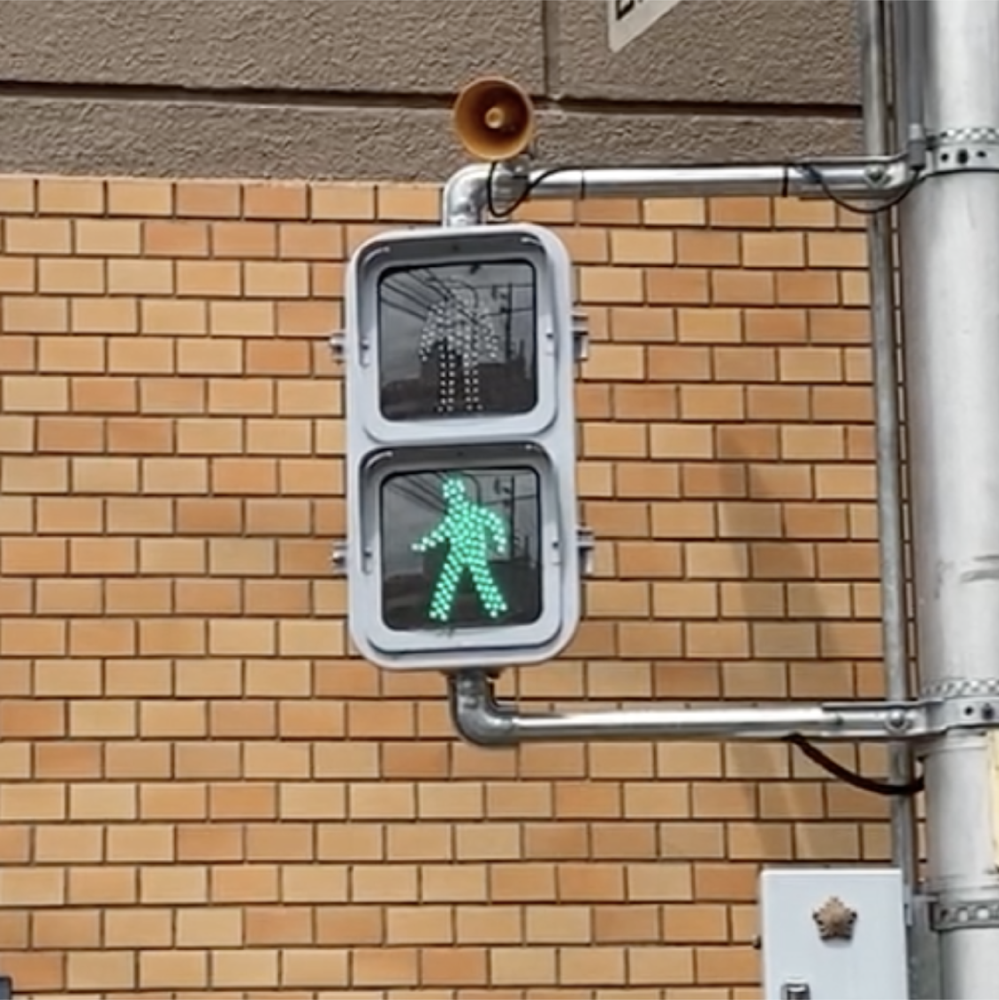
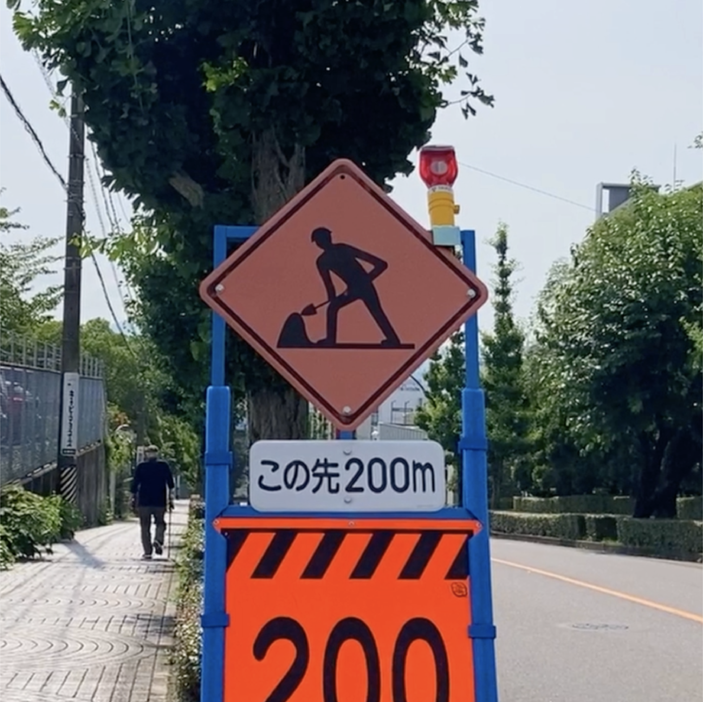
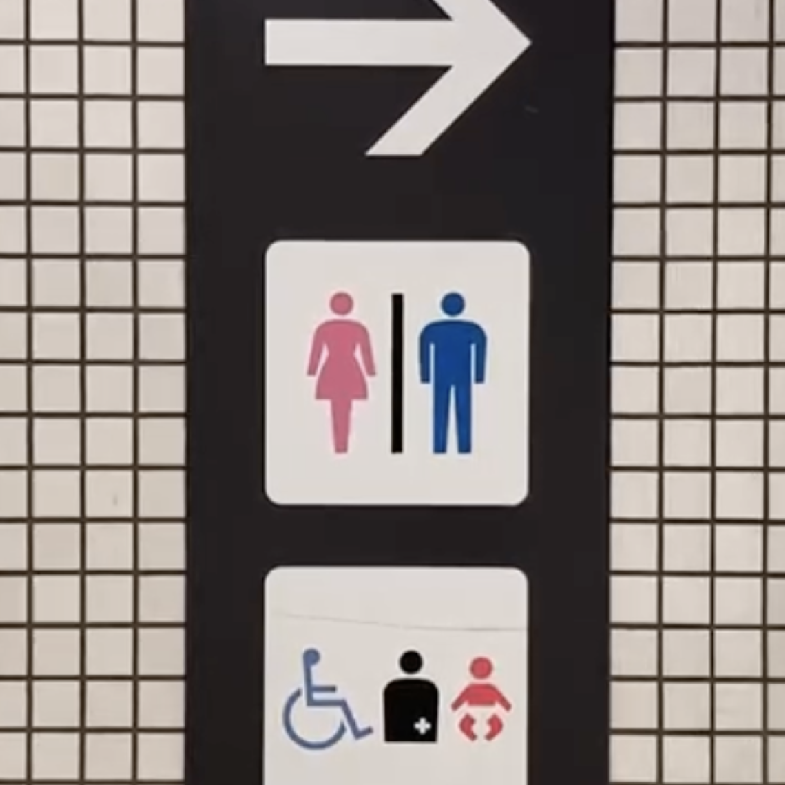
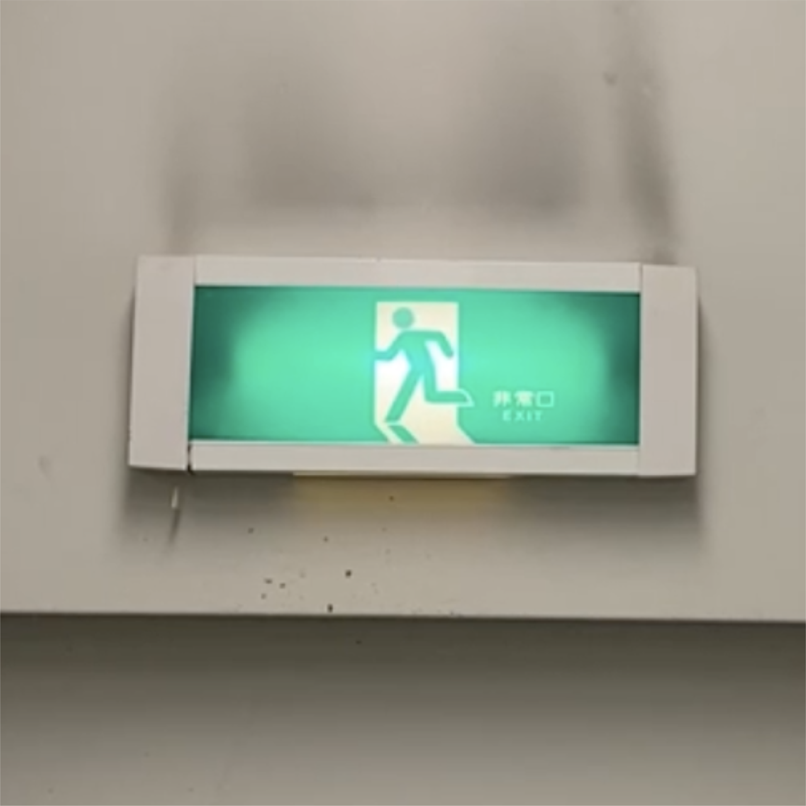
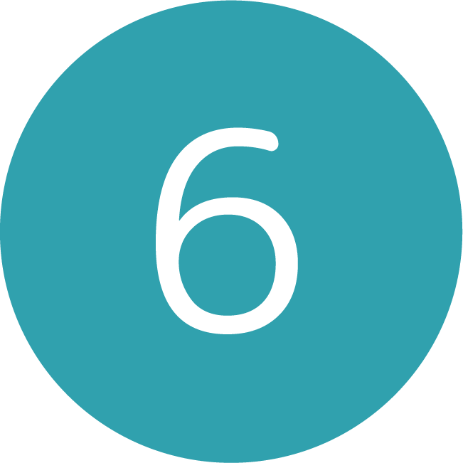
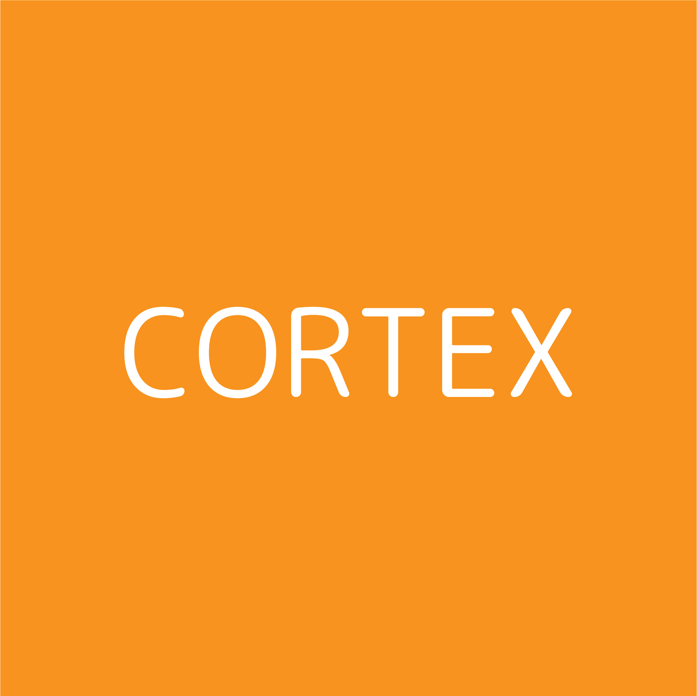
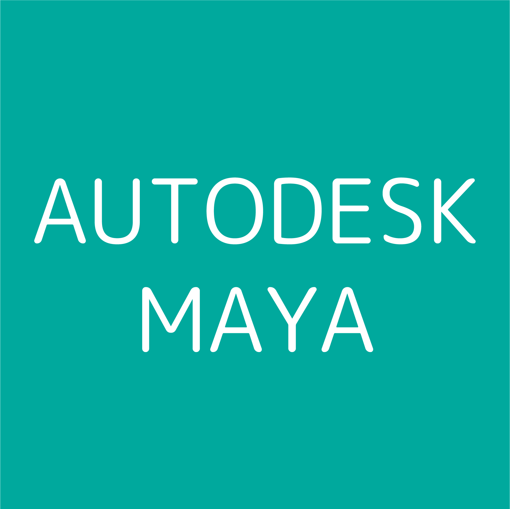

MARK
2021 モーションキャプチャー映像
-
-
作品紹介
実習課題で制作したモーションキャプチャーによる映像作品です
"マークさん"が身の回りのさまざまなマークのポーズをして
何のポーズをしているのか考える映像作品となっています
-
-
コンセプト
目指したのは「子供向けTV番組」。日頃私たちはたくさんの人の形をした記号や標識、マークに導かれて生活しています。
当たり前のようにマークの意味を理解していますが、それはグラフィックデザイナーが簡潔で誰でも意味を理解できるように
デザインしているからです
平面で構成された人型マークを、モーションキャプチャーにより３次元におこすことで、平面デザインと現実の可逆性・不可逆性や
マークの記号性を「なるほど！」と感じてもらうこと目標に制作しました。
-
-
制作過程
-

-
映像の内容を決定
作成する映像のストーリーとカメラワークを決めます。また、撮影するマークのポーズを決めます。
今回はよりポーズと色がわかりやすいように青信号、道路工事中、トイレ、非常口のマークにしました。

-

-
モーションの撮影
Cortexを使用してモーションの撮影・編集を行います。
実際に自分自身で専用のスーツを来て撮影しました。
-

-
3Dモデルに骨つけ
Mayaで使用したい3Dモデルに骨をつけます
HumanIKを設定して3Dモデルが滑らかに動くか
確認作業も行います
画像1番右のモデルを使用しました

-

-
モデルを当てる/修正
Motion Builderで骨をつけた3Dモデルに
撮影したモーションを適用させます
さらに適用後、不自然な箇所がないように
マーカーごとに修正を行います
-

-
実写映像の撮影
日常的に見るマークをテーマにしているため、街中にあるマークを探して撮影しました
- 
- 
- 
- 
- 
-
映像編集
Adobe After Effectを使用して編集作業をします
モーション以外の背景やBGMをつけます
-
使用ソフトウェア
-

-

-

-